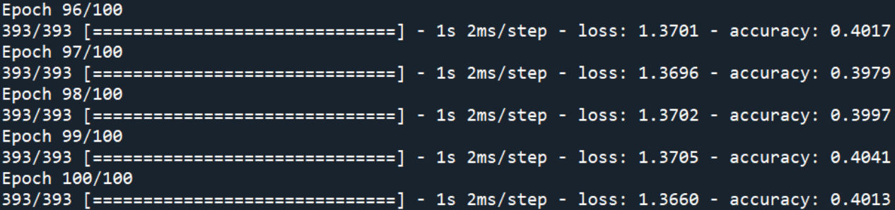

使用技術

訓練模型 — RNN演算法
循環神經網路是一種人工神經網路，具有前一時間的輸出或隱藏狀態獲取訊息的能力，這使它能夠捕捉序列數據中的時間相依性。 本計畫根據收集到的眼球動作之腦波訊號，使用循環神經網路(RNN)的長短期記憶(LSTM)演算法捕捉時間相依性並進行分類，以便對未來使用者的眼球動作進行預測和判斷。

訓練模型 — Python語言
Python是一種廣泛使用的直譯式、進階和通用的程式語言，支援多種程式設計範式，包括結構化、程序式、反射式、物件導向和函式語言程式設計。它擁有動態型別系統和垃圾回收功能，能夠自動管理記憶體使用，並且其本身擁有一個巨大而廣泛的標準庫。 本計畫使用Python語言以LSTM演算法建立眼球往上、眼球往下、眼球往左、眼球往右即刻意眨眼的訓練模型。
腦波收集 — BrainLink Lite腦波儀
BrainLink動態腦波儀是一款非侵入式腦波設備，透過儀器對腦波數披進行採集。 此計畫運用腦波儀測量並收集使用者執行不同眼球動作（眼球往上、眼球往下、眼球往左、眼球往右即刻意眨眼）的腦波訊號。

資料庫 — SQL Lite
SQL Lite是遵守ACID的關聯式資料庫管理系統，它包含在一個相對小的C程式庫，且被整合在使用者程式中。 本計畫使用SQL Lite儲存選單所需功能、語音、使用紀錄、腦波模型等資料
訓練介面
- 全部
- 腦波數據搜集
- RNN模型訓練
- 決策規則導入
腦波搜集訓練
決策規則導入
腦波搜集
RNN訓練
決策規則導入
